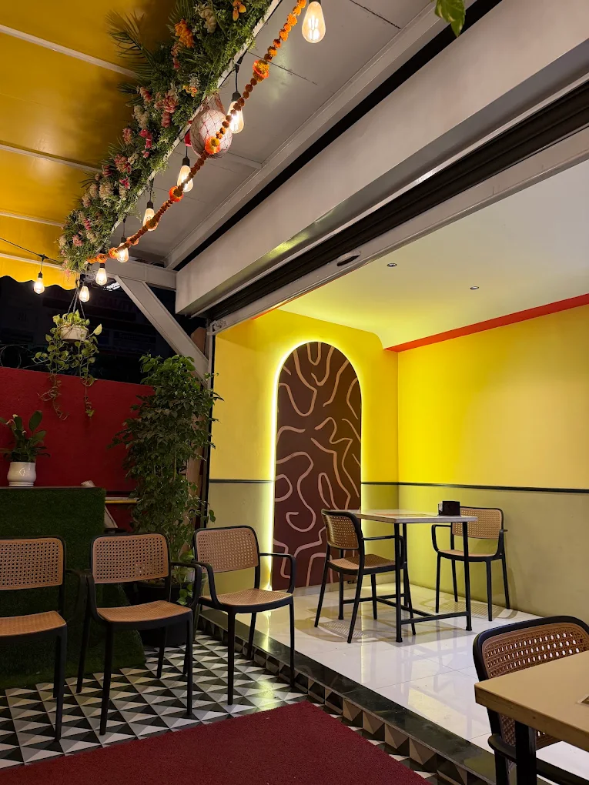
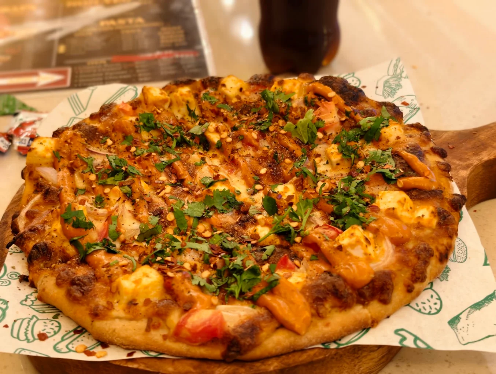

Makhani Paneer
Signature makhani gravy and marinated paneer.
Meet RDG’s Slice of Wheat and RDG’s Slice of Heaven — two Pune cafe destinations for food and good company.

Welcome to RDG's Slice of Wheat — a colourful corner for comforting food, friendly conversations, and the kind of moments you want to linger over.
Grab your favourite pizza, dig into a hearty burger, or settle in with pasta. There's always something delicious waiting.
PLAN YOUR VISIT ↗
Golden crusts, generous toppings, and all the cheesy goodness you came for.
SEE THE FOOD ↗Real moments, real food, and a peek inside RDG's.
Pick a location to plan your visit. Exact addresses, hours and branch-specific details are pending owner confirmation.
Enjoy pizzas, burgers, wraps and pasta. Explore the original food photography and photographed menu above.
Discover the Pimple Gurav location. We’ll add its authentic menu, gallery, opening hours and contact details once verified with the owner.
Concept preview: Google Maps buttons open search results, not verified map pins. Please confirm business details before publishing.
Whether you're heading to Slice of Wheat or Slice of Heaven, choose your cafe above and find directions. Please verify the exact location and opening hours before travelling.
For Slice of Wheat updates, visit the linked Instagram page. Slice of Heaven contact details will be added after verification.